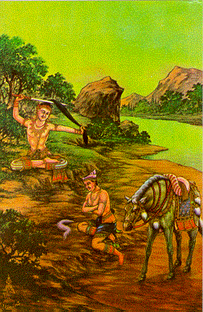

| 11 | 12 |
|  |  |
| Prince Siddhattha took a sword and
cut off his hair with one blow. Thái tử Sĩ-đạt-ta cắt tóc với một nhát gươm. |
Self-mortification: Prince
Siddhattha, the Buddha-to-be, practised self-mortification for six years until he became
very thin. His bones showed prominently. But his austerities did not lead him to
deliverance. When he listened to a song played by Indra, he thought of a stringed
instrument and discovered the Middle Way. Tự hành hạ thể xác: Thái tử Sĩ-đạt-ta, vị Phật sắp thành, hành pháp ép xác trong 6 năm đến khi Ngài trở nên rất gầy yếu. Xương trong thân lộ ra ngoài. Nhưng sự hành hạ xác thân không đưa đến giải thoát. Khi Ngài nghe một bài hát do Phạm thiên Indra đánh đàn, Ngài liên tưởng đến loại đàn với dây không căng không chùng, và từ đó Ngài khám phá con đường trung dung, Trung Ðạo. |